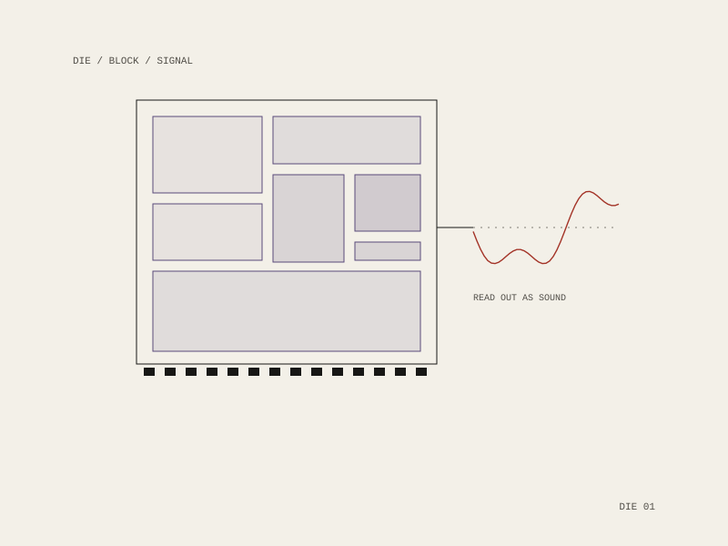

11 / project
Siliconkin
Kinship with the substrate
Work that takes the machine seriously as kin rather than as a tool: the die read as a landscape with regions and neighbours, and its activity heard rather than only measured.

The move
A processor is usually described in the language of instruments — it executes, it serves, it is used. Read instead as a floorplan, it becomes a place: blocks with borders, neighbours, traffic between them, and a bond of pads at the edge where it meets everything else.
Making that audible is the second half. The same structure that draws as a floorplan can be read out as sound, which is the operation Diagrammatic Immanence and sounds-like both run: one object, two renderings, never a picture and a soundtrack that merely resemble each other.